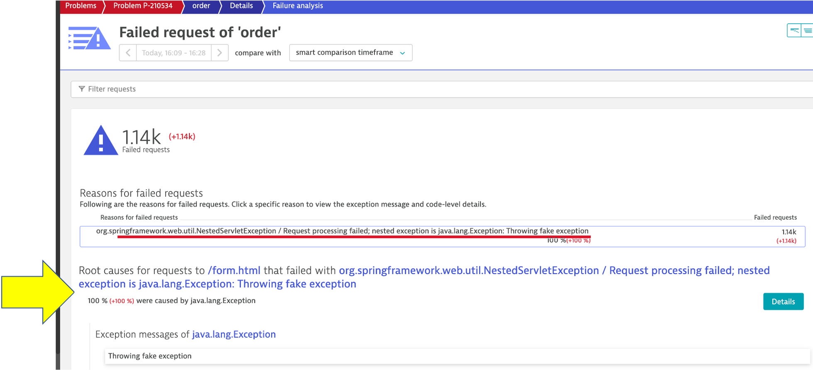

A micro-services architecture provides the best environment for agile development, but also giving rise to a complex ecosystem of microservices.
There are more possibilities for failures and more hiding spots for problems to sneak into the environment when software driving more than just the application.
Often the monitoring tools organizations use simply don't work for such complexity and scale as finding the root cause of problems is harder than ever before and the effort required goes beyond what is humanly possible when the application spans to the cloud providers and data centers and the explosion of interconnected services.
What if...
🔷 You can spot problems even before they reach production?
🔷 Release evaluations in your pipeline can be automated such that there are faster feedback loops?
🔷 You can then delivery more reliable software, much faster than before because of these automation?
An example is the following using AWS Code Deploy:

However, in this lab, we will not have time to build out the entire AWS Code Deploy.
Instead, we will manually trigger a deployment in a micro-service and see how troubleshooting time is significantly reduced by letting AI automatically detect problems and pinpoints the root cause, explaining business impact with no manual configurations.
In this way, you can see how DAVIS and Dynatrace helps to automate release validations and provide faster feedback loops.
You are now an app developer and you have done some enhacements to one of the services. You will use the AWS Cloudshell to deploy version 3 of the one of the microservice.
cd ~/aws-modernization-dt-orders-setup/learner-scripts/
./set-version.sh order 3
To automate the version change, a unix script is provided that will do the following:
- Call the order/setversion URL set the order-service version
- Send a Dynatrace CUSTOM_DEPLOYMENT event indicating the change

From the left side menu, navigate to the Releases page. Here you will see the how Dynatrace detected the versions of monitored processes. It may take a minute, but you will see the version change in the Real-time inventory section and a new event in the Release events section.
NOTE Be sure to adjust the management zone to dt-orders-services

If you expand the event, you should see something like this

View app in browser
The event has the URL back to the sample application, so just click that if you don't have the sample app up already. You should see version 3 for the order app now too.

The problem may take a minute to show up, but this is what the problem will look like once it does. Also, you may see two problems that eventually get merged into one as Dynatrace is performing the problem analysis.
- Problem card windows and impact summary
- Root cause
- Deployment event as additional context

Analyze problem
Referring to #4 in the picture above, click on the Analyze failure rate degradation button.
Right away we can see that there were exceptions in the code and the details button can be clicked to see the code stack trace.

Analyze problem impact
From the breadcrumb menu, click on the order to open the service page.

On this page, notice the failure rate.

Then click on the failure rate box to open the service details page. You can see exactly when the problem started.

You have enough trouble for one day. Let's roll back the version and prevent this bad code from reaching production. From CloudShell, run these commands to set the version back to version 1
cd ~/aws-modernization-dt-orders-setup/learner-scripts/
./set-version.sh order 1
Dynatrace will automatically close the problem once it detects things are back to normal.
In this section, you should have completed the following:
✅ Release observability
✅ Understand how DAVIS is able to help you spot bad code before it reaches production.